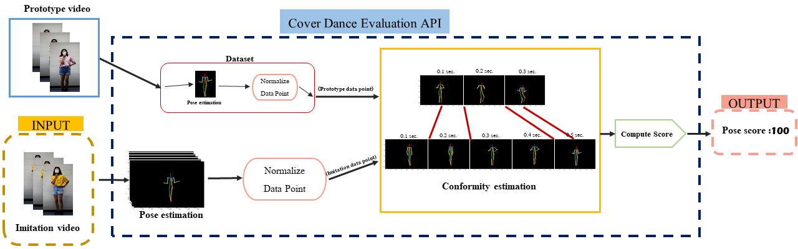

Cover Dance Evaluation Algorithm
using 2D Skeleton Analysis
Example Results: Webpage(Prototype)
Abstract

Nowadays, cover dancing is a dance that has received a lot of attention from society. Because it is a dance that imitates the choreography from their favorite artist And can also be used to compete in competitions. But currently there is no system that allows accurate dance scores. For this reason, the researcher developed an algorithm to detect the similarities between human dance posture in the original video and mimic video and develop dance data sets (Video Dataset) That is the dance of a person to use in testing the algorithm.
In this research, OpenPose is used to analyze the position of important points in the human body in 18 important clips by using COCO Output. Format to sort the points. And using the Dynamic Time Warping algorithm. For analyzing the resemblance of the choreography of people in the original clip and the clip in imitation, Including learning to convert points from the created data set. The developed data set contains 400 clips.
The developed algorithm developed into the Cover Dance Evaluation API for others to be able to use. The results of the consistency testing of choreographic simulation data obtained from experts. Inexperienced And from the algorithm It can be concluded that the choreography scoring scores from the algorithm are inconsistent with and inexperienced. Due to the small video clip being seen, some dance details are missing or unclea.
Example Video Dancing from algorithm openpose
The website template was borrowed from Michaël Gharbi.